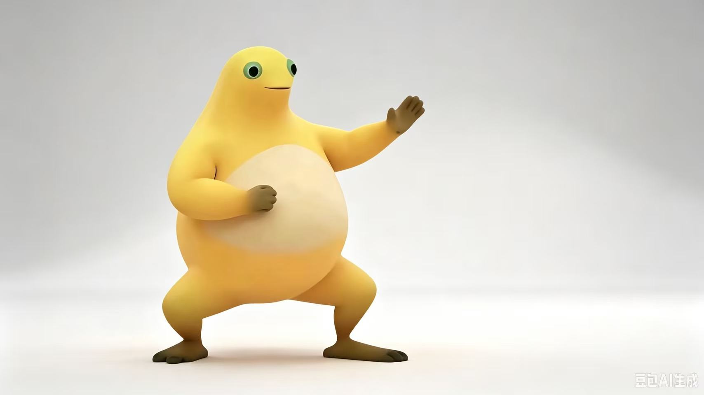

A LITTLE SPACE, JUST FOR YOU
今天，心里是什么天气？
开心可以分享，委屈也可以放下。
慢慢说，奶娃在听。
不用整理好心情，才来这里。 ♡
MOMENT CHECK-IN
给此刻的自己，留一句话
✿YOUR LITTLE DAYS每一天，都有自己的颜色。
回头看看，自己一路走来的小小片段。
一二三四五六日
圆点代表当天记录过的心情 · 点击日期回看
我的心情手记
TAKE YOUR TIME允许自己，暂停一下。
不用努力变开心。先把这一分钟，留给自己。
60 SECONDS WITH NAIWA慢慢来给自己一分钟
双脚轻轻踩地，松松肩膀。
按自己的节奏舒适呼吸，无需跟随圆圈。
随时可以停下，睁着眼睛也很好。
A TINY HAPPY MOMENT
奶娃正在接住你的烦恼

“我摆好架势了，你可以先歇一会儿。”
A QUIET LITTLE MOMENT和奶娃安静待一会儿

正在使用演示模式 · 示例不会混入你的记录